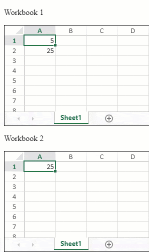
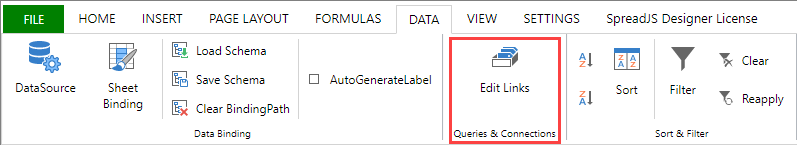
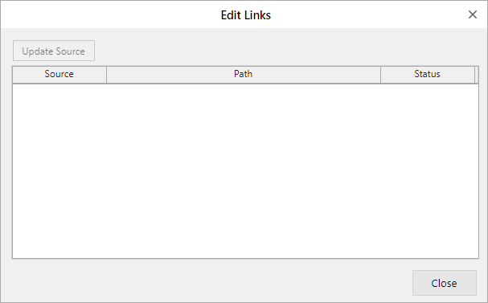

SpreadJS provides support for formulas that calculate values by referring to and using data from different workbooks. These formulas are known as cross-workbook formulas and can be used through the following syntax:
'filePath[workbookName]sheetName'!CellOrRangeAddress
For example: “=[Calc.xlsx]Sheet1!A1”, “=[Calc.xlsx]Sheet1!A1:B3”
Note: The cross-workbook reference does not support dynamic array spill or the INDIRECT function.
You can set or update the data of external sources with the workbook JSON. The updateExternalReference method accepts parameters such as the link name, the JSON data, and the file path.
The following GIF illustrates how SpreadJS updates the external references set in "Workbook 1" and “Workbook 2” when the A1 cell is updated in “Workbook 1”.

| JavaScript |
Copy Code
|
|---|---|
var spread1 = new GC.Spread.Sheets.Workbook(document.getElementById('ss1'), { sheetCount: 1 }); var spread2 = new GC.Spread.Sheets.Workbook(document.getElementById('ss2'), { sheetCount: 1 }); // set value in cell A1 of Spread1 spread1.sheets[0].setValue(0, 0, 5); var spread1Task; function updateSpread1() { if (!spread1Task) { spread1Task = setTimeout(() => { spread1.updateExternalReference("calc.xlsx", spread2.toJSON()); spread1Task = null; }) } } var spread2Task; function updateSpread2() { if (!spread2Task) { spread2Task = setTimeout(() => { spread2.updateExternalReference("result.xlsx", spread1.toJSON()); spread2Task = null; }) } } spread1.bind(GC.Spread.Sheets.Events.ValueChanged, updateSpread2) spread1.bind(GC.Spread.Sheets.Events.RangeChanged, updateSpread2) spread2.bind(GC.Spread.Sheets.Events.ValueChanged, updateSpread1) spread2.bind(GC.Spread.Sheets.Events.RangeChanged, updateSpread1) // sample spread1.updateExternalReference("calc.xlsx", spread2.toJSON()); spread2.updateExternalReference("result.xlsx", spread1.toJSON()); spread1.sheets[0].setFormula(1, 0, "='[calc.xlsx]Sheet1'!A1"); spread2.sheets[0].setFormula(0, 0, "='[result.xlsx]Sheet1'!A1^2"); |
|
You can fetch the cross-workbook reference list of the current workbook. The getExternalReferences method returns an array of objects containing the file name and the file path of the cross-workbook reference.
The following code example shows how to fetch a list of external references used in the current worksheet.
| JavaScript |
Copy Code
|
|---|---|
var spread = new GC.Spread.Sheets.Workbook(document.getElementById("ss"), { sheetCount: 1 }); var sheet = spread.getActiveSheet(); sheet.setFormula(0, 0, "='[Jackson.xlsx]Sheet1'!A1"); sheet.setFormula(1, 0, "='[Petrosky]Sheet1'!A1"); console.log(spread.getExternalReferences()); // Output: // Array(2) // 0: { name: 'Jackson.xlsx', filePath: '' } // 1: { name: 'Petrosky', filePath: '' } |
|
The SpreadJS Designer helps to update the cross workbook values in a worksheet through the “Edit Links” option in the “Data” > Queries & Connections” ribbon group.

It opens the following dialog window where you can update sources.
